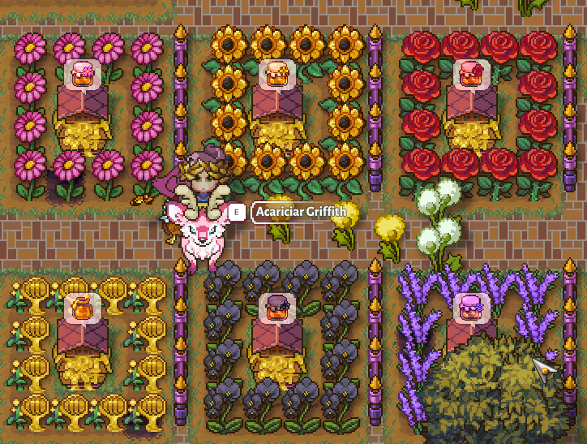

Olá! Muito prazer! Me chamo Thayna e estou em busca de realizar meus sonhos na área da tecnologia.
Sou bacharel em Direito, atriz a mais de 10 anos, fotógrafa, modelo, maquiadora e também cantora e por ultimo, mas não menos importante:
Programadora Full Stack em formação! Back-End em JavaScript e Python e Front-End em JavaScript!
Pode me chamar pra assistir filme ghore, do Adam Sandler ou qualquer animação, principalmente se for Disney ou Ghibli!
Sou Otaku, dorameira, kpopeira e amo um joguinho de passar fase, principalmente se for da nintendo ou de fazendinha!

Back-End na linguagem JavaScript; Conclusão: Dezembro de 2023
Cursando atualmente: Front-End em JavaScript na ADA, 2024.
Será um prazer me conectar com você nas redes sociais com vocês!